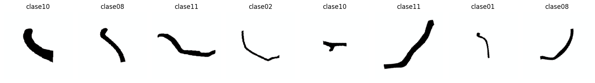
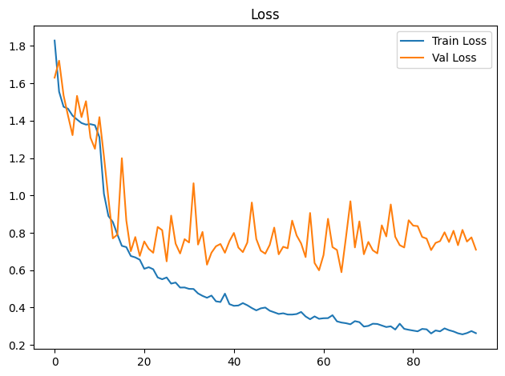
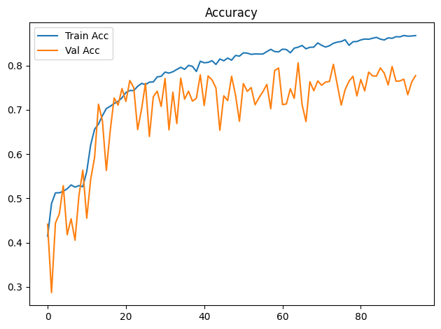
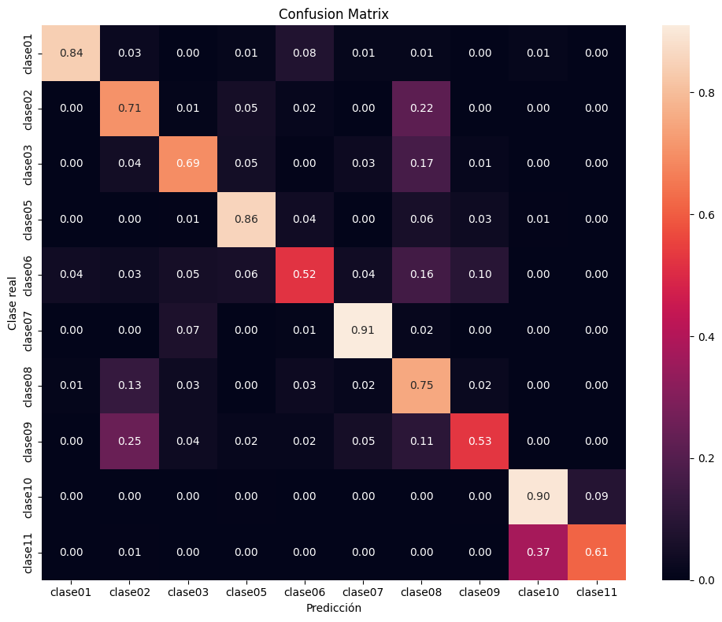

Dispositivo utilizado para procesamiento: CUDA - NVIDIA GeForce GTX 1650Entrenamiento de CNN ResNet-18 con Transfer Learning
Objetivos
- Construir un modelo baseline de clasificación mediante transfer learning con ResNet18 preentrenada.
- Entrenar inicialmente solo la capa clasificadora y descongelar
layer4enUNFREEZE_EPOCHcon una tasa de aprendizaje menor. - Aplicar transformaciones y aumentación de datos al conjunto de entrenamiento.
- Entrenar y validar el modelo registrando loss y accuracy por época.
- Detener el entrenamiento si val_loss no mejora suficientemente durante la paciencia configurada.
- Evaluar el modelo de la mejor época de validación sobre el conjunto de prueba.
- Analizar los resultados mediante accuracy, precision, recall, F1-score, reporte de clasificación y matriz de confusión normalizada.
- Guardar los pesos restaurados de la mejor época de validación (o los finales si se desactiva la parada anticipada).
Dispositivo para procesamiento
División de datos
La pertenencia de cada imagen a train, val o test se lee de la metadata generada por el notebook de división. La relación se realiza mediante ruta_relativa; por tanto, el split no se recalcula aunque cambien la semilla o los parámetros del entrenamiento.
Dataset seleccionado: unificado
Directorio de datos: /home/rafael/Dev/vasijas/data/12.unificado_divididos_en_train_val_y_test
Metadata de split: data/12.unificado_divididos_en_train_val_y_test/metadata.csv
Clases: clase01 clase02 clase03 clase05 clase06 clase07 clase08 clase09 clase10 clase11
Split persistido -> train: 14231, val: 3059, test: 3059
Conteo train por clase: [342, 608, 950, 741, 684, 646, 3724, 266, 4712, 1558]
Pesos de clase: [4.161, 2.341, 1.498, 1.921, 2.081, 2.203, 0.382, 5.35, 0.302, 0.913]Epoch 1/300
Train Loss: 1.8285 | Train Acc: 0.4143 | Val Loss: 1.6300 | Val Acc: 0.4413
Tiempo de epoch: 0:01:27.819557
Epoch 2/300
Train Loss: 1.5550 | Train Acc: 0.4882 | Val Loss: 1.7207 | Val Acc: 0.2870
Tiempo de epoch: 0:01:26.889098
Epoch 3/300
Train Loss: 1.4744 | Train Acc: 0.5123 | Val Loss: 1.5350 | Val Acc: 0.4439
Tiempo de epoch: 0:01:23.738022
Epoch 4/300
Train Loss: 1.4637 | Train Acc: 0.5125 | Val Loss: 1.4258 | Val Acc: 0.4652
Tiempo de epoch: 0:01:23.677121
Epoch 5/300
Train Loss: 1.4269 | Train Acc: 0.5158 | Val Loss: 1.3224 | Val Acc: 0.5286
Tiempo de epoch: 0:01:24.093011
Epoch 6/300
Train Loss: 1.4061 | Train Acc: 0.5215 | Val Loss: 1.5324 | Val Acc: 0.4178
Tiempo de epoch: 0:01:24.508159
Epoch 7/300
Train Loss: 1.3873 | Train Acc: 0.5302 | Val Loss: 1.4189 | Val Acc: 0.4537
Tiempo de epoch: 0:01:24.027185
Epoch 8/300
Train Loss: 1.3789 | Train Acc: 0.5253 | Val Loss: 1.5041 | Val Acc: 0.4054
Tiempo de epoch: 0:01:26.576143
Epoch 9/300
Train Loss: 1.3813 | Train Acc: 0.5287 | Val Loss: 1.3091 | Val Acc: 0.5060
Tiempo de epoch: 0:01:26.416658
Epoch 10/300
Train Loss: 1.3755 | Train Acc: 0.5262 | Val Loss: 1.2495 | Val Acc: 0.5636
Tiempo de epoch: 0:01:26.738341
Epoch 11: se descongela layer4 con lr=1.00e-04 (head lr=1.00e-03)
Epoch 11/300
Train Loss: 1.3115 | Train Acc: 0.5609 | Val Loss: 1.4187 | Val Acc: 0.4551
Tiempo de epoch: 0:01:58.732888
Epoch 12/300
Train Loss: 1.0090 | Train Acc: 0.6207 | Val Loss: 1.2103 | Val Acc: 0.5430
Tiempo de epoch: 0:01:58.586840
Epoch 13/300
Train Loss: 0.8902 | Train Acc: 0.6560 | Val Loss: 0.9844 | Val Acc: 0.5924
Tiempo de epoch: 0:01:59.773068
Epoch 14/300
Train Loss: 0.8574 | Train Acc: 0.6678 | Val Loss: 0.7704 | Val Acc: 0.7127
Tiempo de epoch: 0:01:56.302400
Epoch 15/300
Train Loss: 0.7915 | Train Acc: 0.6867 | Val Loss: 0.7903 | Val Acc: 0.6751
Tiempo de epoch: 0:01:56.423409
Epoch 16/300
Train Loss: 0.7303 | Train Acc: 0.7028 | Val Loss: 1.1991 | Val Acc: 0.5629
Tiempo de epoch: 0:01:56.334707
Epoch 17/300
Train Loss: 0.7236 | Train Acc: 0.7080 | Val Loss: 0.8659 | Val Acc: 0.6532
Tiempo de epoch: 0:01:56.151659
Epoch 18/300
Train Loss: 0.6760 | Train Acc: 0.7142 | Val Loss: 0.7016 | Val Acc: 0.7267
Tiempo de epoch: 0:01:56.066305
Epoch 19/300
Train Loss: 0.6685 | Train Acc: 0.7191 | Val Loss: 0.7775 | Val Acc: 0.7107
Tiempo de epoch: 0:01:56.085085
Epoch 20/300
Train Loss: 0.6561 | Train Acc: 0.7271 | Val Loss: 0.6764 | Val Acc: 0.7480
Tiempo de epoch: 0:01:56.261897
Epoch 21/300
Train Loss: 0.6076 | Train Acc: 0.7391 | Val Loss: 0.7540 | Val Acc: 0.7189
Tiempo de epoch: 0:01:56.217599
Epoch 22/300
Train Loss: 0.6160 | Train Acc: 0.7436 | Val Loss: 0.7142 | Val Acc: 0.7663
Tiempo de epoch: 0:01:56.236729
Epoch 23/300
Train Loss: 0.6052 | Train Acc: 0.7434 | Val Loss: 0.6934 | Val Acc: 0.7502
Tiempo de epoch: 0:01:56.233376
Epoch 24/300
Train Loss: 0.5612 | Train Acc: 0.7529 | Val Loss: 0.8314 | Val Acc: 0.6554
Tiempo de epoch: 0:01:56.212834
Epoch 25/300
Train Loss: 0.5517 | Train Acc: 0.7597 | Val Loss: 0.8142 | Val Acc: 0.7012
Tiempo de epoch: 0:01:56.083565
Epoch 26/300
Train Loss: 0.5612 | Train Acc: 0.7569 | Val Loss: 0.6475 | Val Acc: 0.7601
Tiempo de epoch: 0:01:56.101720
Epoch 27/300
Train Loss: 0.5284 | Train Acc: 0.7626 | Val Loss: 0.8920 | Val Acc: 0.6398
Tiempo de epoch: 0:01:56.075033
Epoch 28/300
Train Loss: 0.5340 | Train Acc: 0.7630 | Val Loss: 0.7421 | Val Acc: 0.7297
Tiempo de epoch: 0:01:56.124396
Epoch 29/300
Train Loss: 0.5072 | Train Acc: 0.7744 | Val Loss: 0.6895 | Val Acc: 0.7421
Tiempo de epoch: 0:02:03.158784
Epoch 30/300
Train Loss: 0.5076 | Train Acc: 0.7756 | Val Loss: 0.7660 | Val Acc: 0.7077
Tiempo de epoch: 0:01:58.607688
Epoch 31/300
Train Loss: 0.5002 | Train Acc: 0.7853 | Val Loss: 0.7484 | Val Acc: 0.7708
Tiempo de epoch: 0:01:56.394026
Epoch 32/300
Train Loss: 0.4996 | Train Acc: 0.7829 | Val Loss: 1.0651 | Val Acc: 0.6548
Tiempo de epoch: 0:01:56.749290
Epoch 33/300
Train Loss: 0.4758 | Train Acc: 0.7860 | Val Loss: 0.7371 | Val Acc: 0.7398
Tiempo de epoch: 0:01:57.548510
Epoch 34/300
Train Loss: 0.4627 | Train Acc: 0.7912 | Val Loss: 0.8048 | Val Acc: 0.6688
Tiempo de epoch: 0:01:58.349607
Epoch 35/300
Train Loss: 0.4526 | Train Acc: 0.7961 | Val Loss: 0.6297 | Val Acc: 0.7715
Tiempo de epoch: 0:01:58.394716
Epoch 36/300
Train Loss: 0.4643 | Train Acc: 0.7915 | Val Loss: 0.6938 | Val Acc: 0.7241
Tiempo de epoch: 0:01:56.278812
Epoch 37/300
Train Loss: 0.4337 | Train Acc: 0.8004 | Val Loss: 0.7280 | Val Acc: 0.7421
Tiempo de epoch: 0:01:56.524468
Epoch 38/300
Train Loss: 0.4298 | Train Acc: 0.7981 | Val Loss: 0.7403 | Val Acc: 0.7195
Tiempo de epoch: 0:01:56.492773
Epoch 39/300
Train Loss: 0.4745 | Train Acc: 0.7867 | Val Loss: 0.6932 | Val Acc: 0.7261
Tiempo de epoch: 0:01:56.131409
Epoch 40/300
Train Loss: 0.4185 | Train Acc: 0.8098 | Val Loss: 0.7546 | Val Acc: 0.7790
Tiempo de epoch: 0:01:58.082601
Epoch 41/300
Train Loss: 0.4096 | Train Acc: 0.8063 | Val Loss: 0.7994 | Val Acc: 0.7097
Tiempo de epoch: 0:02:00.075682
Epoch 42/300
Train Loss: 0.4112 | Train Acc: 0.8072 | Val Loss: 0.7212 | Val Acc: 0.7764
Tiempo de epoch: 0:01:58.001798
Epoch 43/300
Train Loss: 0.4240 | Train Acc: 0.8110 | Val Loss: 0.6968 | Val Acc: 0.7676
Tiempo de epoch: 0:02:01.041691
Epoch 44/300
Train Loss: 0.4125 | Train Acc: 0.8025 | Val Loss: 0.7482 | Val Acc: 0.7496
Tiempo de epoch: 0:01:58.939838
Epoch 45/300
Train Loss: 0.3977 | Train Acc: 0.8148 | Val Loss: 0.9620 | Val Acc: 0.6535
Tiempo de epoch: 0:02:01.205846
Epoch 46/300
Train Loss: 0.3852 | Train Acc: 0.8108 | Val Loss: 0.7669 | Val Acc: 0.7316
Tiempo de epoch: 0:01:59.933819
Epoch 47/300
Train Loss: 0.3960 | Train Acc: 0.8169 | Val Loss: 0.7044 | Val Acc: 0.7208
Tiempo de epoch: 0:01:56.411225
Epoch 48/300
Train Loss: 0.4003 | Train Acc: 0.8122 | Val Loss: 0.6885 | Val Acc: 0.7757
Tiempo de epoch: 0:02:01.786121
Epoch 49/300
Train Loss: 0.3833 | Train Acc: 0.8229 | Val Loss: 0.7356 | Val Acc: 0.7332
Tiempo de epoch: 0:02:01.107164
Epoch 50/300
Train Loss: 0.3748 | Train Acc: 0.8212 | Val Loss: 0.8280 | Val Acc: 0.6741
Tiempo de epoch: 0:01:56.163095
Epoch 51/300
Train Loss: 0.3660 | Train Acc: 0.8288 | Val Loss: 0.6850 | Val Acc: 0.7594
Tiempo de epoch: 0:01:56.266175
Epoch 52/300
Train Loss: 0.3696 | Train Acc: 0.8281 | Val Loss: 0.7255 | Val Acc: 0.7417
Tiempo de epoch: 0:01:56.568788
Epoch 53/300
Train Loss: 0.3629 | Train Acc: 0.8253 | Val Loss: 0.7175 | Val Acc: 0.7502
Tiempo de epoch: 0:01:56.206157
Epoch 54/300
Train Loss: 0.3627 | Train Acc: 0.8263 | Val Loss: 0.8653 | Val Acc: 0.7113
Tiempo de epoch: 0:01:56.067300
Epoch 55/300
Train Loss: 0.3656 | Train Acc: 0.8260 | Val Loss: 0.7860 | Val Acc: 0.7274
Tiempo de epoch: 0:01:56.229384
Epoch 56/300
Train Loss: 0.3766 | Train Acc: 0.8261 | Val Loss: 0.7433 | Val Acc: 0.7411
Tiempo de epoch: 0:01:56.131354
Epoch 57/300
Train Loss: 0.3525 | Train Acc: 0.8316 | Val Loss: 0.6702 | Val Acc: 0.7574
Tiempo de epoch: 0:01:56.213807
Epoch 58/300
Train Loss: 0.3378 | Train Acc: 0.8366 | Val Loss: 0.9062 | Val Acc: 0.7025
Tiempo de epoch: 0:01:56.306715
Epoch 59/300
Train Loss: 0.3529 | Train Acc: 0.8316 | Val Loss: 0.6388 | Val Acc: 0.7888
Tiempo de epoch: 0:01:56.103316
Epoch 60/300
Train Loss: 0.3401 | Train Acc: 0.8309 | Val Loss: 0.5994 | Val Acc: 0.7944
Tiempo de epoch: 0:01:56.177639
Epoch 61/300
Train Loss: 0.3431 | Train Acc: 0.8370 | Val Loss: 0.6812 | Val Acc: 0.7117
Tiempo de epoch: 0:01:56.234377
Epoch 62/300
Train Loss: 0.3437 | Train Acc: 0.8362 | Val Loss: 0.8749 | Val Acc: 0.7133
Tiempo de epoch: 0:01:56.207412
Epoch 63/300
Train Loss: 0.3593 | Train Acc: 0.8289 | Val Loss: 0.7235 | Val Acc: 0.7476
Tiempo de epoch: 0:01:56.216549
Epoch 64/300
Train Loss: 0.3264 | Train Acc: 0.8392 | Val Loss: 0.7081 | Val Acc: 0.7257
Tiempo de epoch: 0:01:56.228777
Epoch 65/300
Train Loss: 0.3201 | Train Acc: 0.8416 | Val Loss: 0.5895 | Val Acc: 0.8061
Tiempo de epoch: 0:01:56.265443
Epoch 66/300
Train Loss: 0.3165 | Train Acc: 0.8453 | Val Loss: 0.7748 | Val Acc: 0.7120
Tiempo de epoch: 0:01:56.100944
Epoch 67/300
Train Loss: 0.3108 | Train Acc: 0.8379 | Val Loss: 0.9687 | Val Acc: 0.6734
Tiempo de epoch: 0:01:56.072902
Epoch 68/300
Train Loss: 0.3276 | Train Acc: 0.8413 | Val Loss: 0.7219 | Val Acc: 0.7636
Tiempo de epoch: 0:01:56.354226
Epoch 69/300
Train Loss: 0.3222 | Train Acc: 0.8416 | Val Loss: 0.8610 | Val Acc: 0.7431
Tiempo de epoch: 0:01:56.412687
Epoch 70/300
Train Loss: 0.2985 | Train Acc: 0.8512 | Val Loss: 0.6854 | Val Acc: 0.7653
Tiempo de epoch: 0:01:56.200168
Epoch 71/300
Train Loss: 0.3021 | Train Acc: 0.8457 | Val Loss: 0.7513 | Val Acc: 0.7555
Tiempo de epoch: 0:01:56.141452
Epoch 72/300
Train Loss: 0.3137 | Train Acc: 0.8418 | Val Loss: 0.7065 | Val Acc: 0.7627
Tiempo de epoch: 0:01:56.312225
Epoch 73/300
Train Loss: 0.3124 | Train Acc: 0.8448 | Val Loss: 0.6902 | Val Acc: 0.7640
Tiempo de epoch: 0:01:56.226021
Epoch 74/300
Train Loss: 0.3042 | Train Acc: 0.8503 | Val Loss: 0.8401 | Val Acc: 0.8029
Tiempo de epoch: 0:01:56.276621
Epoch 75/300
Train Loss: 0.2961 | Train Acc: 0.8530 | Val Loss: 0.7806 | Val Acc: 0.7565
Tiempo de epoch: 0:01:56.391184
Epoch 76/300
Train Loss: 0.2999 | Train Acc: 0.8544 | Val Loss: 0.9515 | Val Acc: 0.7107
Tiempo de epoch: 0:01:56.228103
Epoch 77/300
Train Loss: 0.2826 | Train Acc: 0.8583 | Val Loss: 0.7789 | Val Acc: 0.7457
Tiempo de epoch: 0:01:56.177331
Epoch 78/300
Train Loss: 0.3137 | Train Acc: 0.8458 | Val Loss: 0.7340 | Val Acc: 0.7646
Tiempo de epoch: 0:01:56.220539
Epoch 79/300
Train Loss: 0.2864 | Train Acc: 0.8538 | Val Loss: 0.7217 | Val Acc: 0.7757
Tiempo de epoch: 0:01:56.236511
Epoch 80/300
Train Loss: 0.2812 | Train Acc: 0.8543 | Val Loss: 0.8672 | Val Acc: 0.7313
Tiempo de epoch: 0:01:57.191501
Epoch 81/300
Train Loss: 0.2771 | Train Acc: 0.8579 | Val Loss: 0.8385 | Val Acc: 0.7686
Tiempo de epoch: 0:01:56.204328
Epoch 82/300
Train Loss: 0.2730 | Train Acc: 0.8600 | Val Loss: 0.8359 | Val Acc: 0.7427
Tiempo de epoch: 0:01:56.178960
Epoch 83/300
Train Loss: 0.2860 | Train Acc: 0.8594 | Val Loss: 0.7780 | Val Acc: 0.7852
Tiempo de epoch: 0:01:56.595815
Epoch 84/300
Train Loss: 0.2837 | Train Acc: 0.8617 | Val Loss: 0.7690 | Val Acc: 0.7767
Tiempo de epoch: 0:01:56.123337
Epoch 85/300
Train Loss: 0.2616 | Train Acc: 0.8637 | Val Loss: 0.7075 | Val Acc: 0.7761
Tiempo de epoch: 0:01:56.123421
Epoch 86/300
Train Loss: 0.2777 | Train Acc: 0.8597 | Val Loss: 0.7460 | Val Acc: 0.7947
Tiempo de epoch: 0:01:56.243847
Epoch 87/300
Train Loss: 0.2729 | Train Acc: 0.8578 | Val Loss: 0.7557 | Val Acc: 0.7826
Tiempo de epoch: 0:01:56.051021
Epoch 88/300
Train Loss: 0.2888 | Train Acc: 0.8626 | Val Loss: 0.8028 | Val Acc: 0.7561
Tiempo de epoch: 0:01:56.198457
Epoch 89/300
Train Loss: 0.2791 | Train Acc: 0.8616 | Val Loss: 0.7507 | Val Acc: 0.7980
Tiempo de epoch: 0:01:56.044510
Epoch 90/300
Train Loss: 0.2724 | Train Acc: 0.8652 | Val Loss: 0.8109 | Val Acc: 0.7646
Tiempo de epoch: 0:01:56.147694
Epoch 91/300
Train Loss: 0.2625 | Train Acc: 0.8649 | Val Loss: 0.7337 | Val Acc: 0.7653
Tiempo de epoch: 0:01:56.299980
Epoch 92/300
Train Loss: 0.2570 | Train Acc: 0.8680 | Val Loss: 0.8157 | Val Acc: 0.7692
Tiempo de epoch: 0:01:56.244771
Epoch 93/300
Train Loss: 0.2637 | Train Acc: 0.8664 | Val Loss: 0.7533 | Val Acc: 0.7339
Tiempo de epoch: 0:01:56.139978
Epoch 94/300
Train Loss: 0.2744 | Train Acc: 0.8668 | Val Loss: 0.7756 | Val Acc: 0.7627
Tiempo de epoch: 0:01:56.219691
Epoch 95/300
Train Loss: 0.2631 | Train Acc: 0.8678 | Val Loss: 0.7098 | Val Acc: 0.7774
Tiempo de epoch: 0:01:56.132582
Parada anticipada en epoch 95: 30 épocas sin mejora suficiente de val_loss.
Se restauran los pesos de epoch 65 (val_loss=0.5895).
Tiempo total de entrenamiento: 2:59:52.955694

Test Acc: 0.7774
precision recall f1-score support
clase01 0.84 0.84 0.84 76
clase02 0.41 0.71 0.52 133
clase03 0.76 0.69 0.72 209
clase05 0.79 0.86 0.82 152
clase06 0.65 0.52 0.58 152
clase07 0.81 0.91 0.86 133
clase08 0.85 0.75 0.80 798
clase09 0.39 0.53 0.45 57
clase10 0.87 0.90 0.88 1007
clase11 0.69 0.61 0.65 342
accuracy 0.78 3059
macro avg 0.71 0.73 0.71 3059
weighted avg 0.79 0.78 0.78 3059

Modelo guardado en: output/models/model_resnet18_unificado_bs16_lr1e-3_weighted_unfreeze.pth